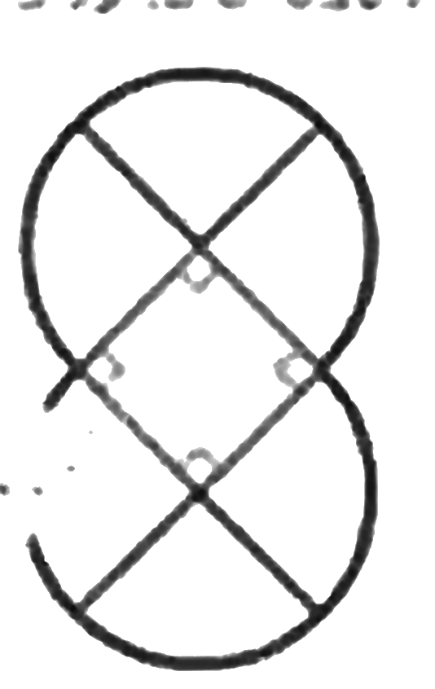

נתון: a ו־b הם מספרים טבעיים. 1½a < b , a + ab = 72⚠
איזה מהבאים יכול להיות ערכו של b?

שני מעגלים חופפים שרדיוסם r הונחו זה על גבי זה ויצרו את הצורה שבסרטוט.
על פי נתונים אלו והנתונים שבסרטוט, השטח הלבןהשטח האפור = ?
⚠ התשובות קטנות – נקראו בקירוב; לא ברור מהסרטון אילו אזורים אפורים.
לכל מספר x הוגדרה הפעולה $ כך שמתקיים: $(x) + 6x = 8x² + 18 − $(x)
$(3) = ?
x הוא מספר תלת־ספרתי בו ספרת העשרות והמאות גדולות פי 4 מספרת האחדות.
מה מהבאים נכון בהכרח?
20 חברי נבחרת האתלטיקה התחרו בריצת 2000 מטר. הממוצע הכללי של הנבחרת היה 184 שניות. זמן הריצה הממוצע (בשניות) של שמונת האצנים המצטיינים היה 181 שניות.
מה היה זמן הריצה הממוצע (בשניות) של שאר חברי הנבחרת?

בסרטוט שלפניכם משולש ABC. D ו־E נקודות על הצלעות BC ו־AB בהתאמה.
לאור נתונים אלו ונתוני הסרטוט, שטח טרפז EACDשטח משולש BED = ?
נתון: (√x − √y) · √x > (√x + √y) · √y , 0 < x, y
מה מהבאים יכול להיות ערכו של x?
לניא קובייה הוגנת בת 6 פאות ועליה המספרים 1 עד 6. בשעה 8:00 בבוקר החל ניא להטיל את הקובייה, אחת לכל שעה עגולה ללא הפוגה במשך 24 שעות. איתן עבר לידו ב־14:00, ב־17:00 וב־22:00. מה הסיכוי שבשלושת הפעמים שעבר לידו ראה את אותה התוצאה בהטלת הקובייה?
נתון: x הוא מספר שבעת חלוקתו ב־7 מתקבלת שארית 1. בהנחה ש־y הוא מספר טבעי, איזה מהביטויים הבאים אינו יכול להיות שווה ל־x?
מספר "אידיאלי" הוא מספר שלם שאינו משתנה אם קוראים אותו בכיוון ההפוך. למשל, המספרים 12121 ו־23432 הם מספרים אידיאליים.
כמה מספרים חמש־ספרתיים עונים להגדרה של מספרים אידיאליים?